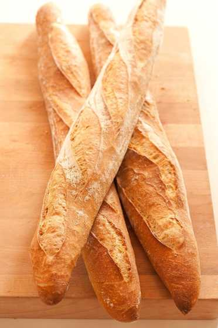
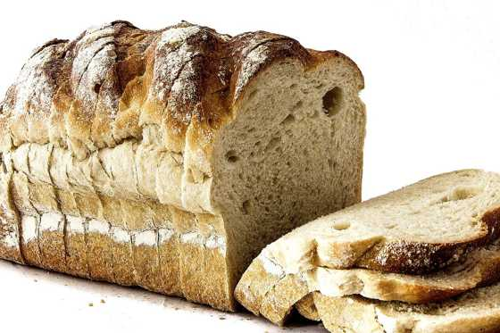

三重県尾鷲市 / 2019年1月開店
はしもと
パン屋
朝いちばんの町に、焼きたてのコッペパンと菓子パンを。
三重県尾鷲市 / 2019年1月開店
朝いちばんの町に、焼きたてのコッペパンと菓子パンを。
ABOUT
はしもとパン屋は、三重県尾鷲市中村町にあるパン屋です。2019年1月11日に開店し、毎朝、コッペパンや菓子パンを販売していると、Instagramで紹介されています。
開業の経緯や店名の由来は確認できていないため、掲載していません。ここでの「朝」のイメージは制作側のものです。

BREAD

Instagramで毎朝販売と紹介。種類・価格は準備中

Instagramで毎朝販売と紹介。種類・価格は準備中

品書きは準備中




品書き・価格・営業時間・定休日は 準備中 です(Instagramには火・水・金・土の7:30〜18:00との記載がありますが、最新情報はInstagramでご確認ください)。

VOICE
朝の散歩のついでに寄って、あたたかいコッペパンを買って帰りました。1日がやさしく始まります。
小さい頃に食べたような、懐かしい菓子パンがありました。
朝早くから開いているので、通勤前に買えるのがありがたいです。


上記は制作側が作成したイメージ例で、実在のお客様の声ではありません。
写真はフリー素材のイメージで、店舗の実際の様子ではありません。これは試作ページです。